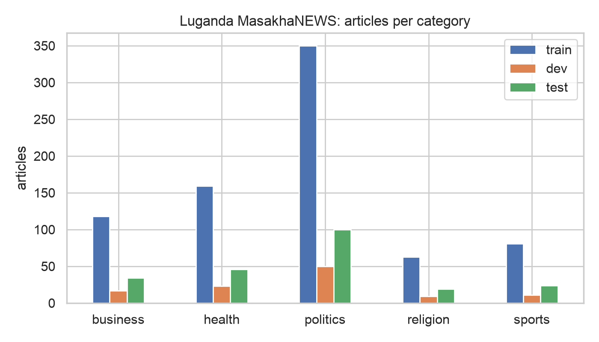
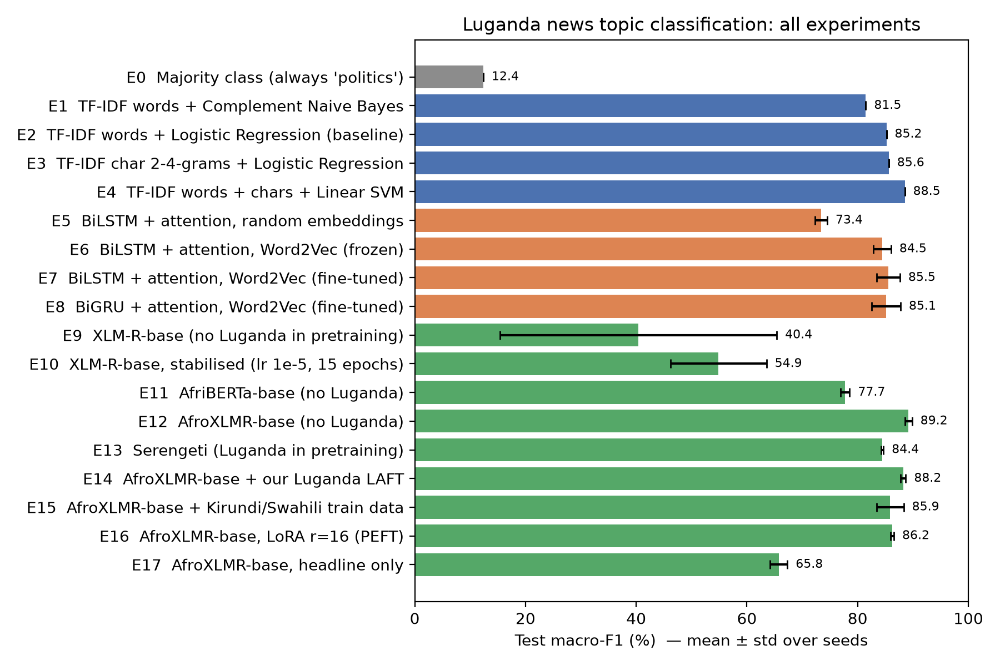
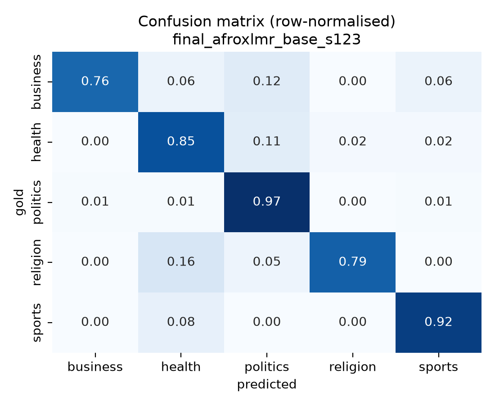
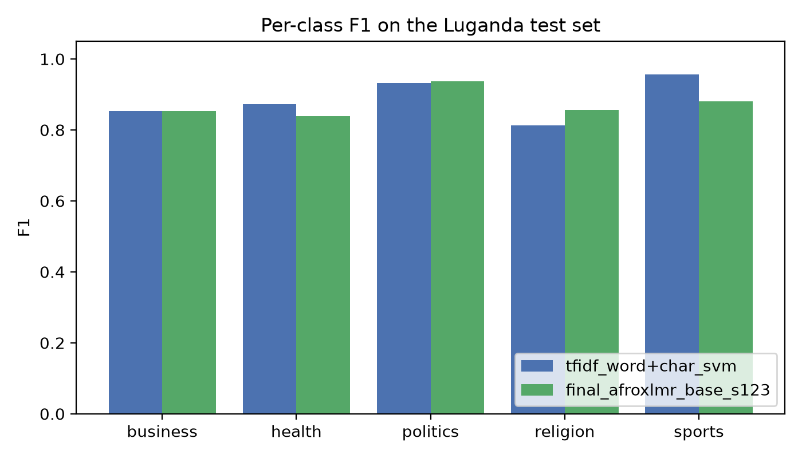
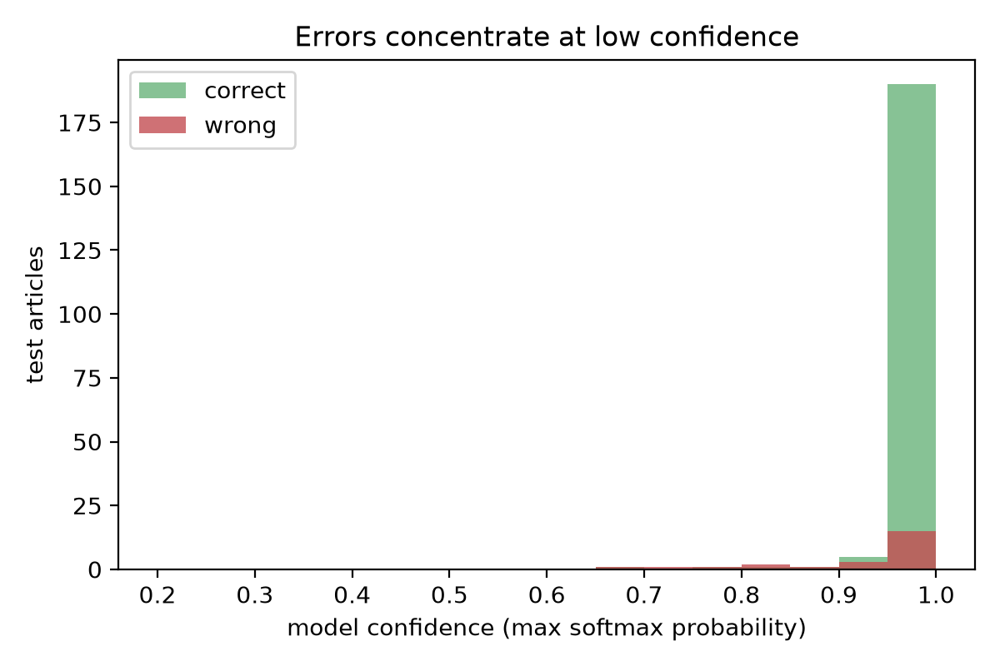

Luganda is a Bantu language spoken by about 11 million people in Uganda, yet it has very little labelled data for natural language processing (NLP), and it is absent from the pretraining corpora of the most widely used African language models. This project builds and deploys a news topic classifier for Luganda that assigns an article to one of five topics (business, health, politics, religion, sports), using the Luganda portion of the MasakhaNEWS benchmark (771 training, 110 validation and 223 test articles). We compare 18 configurations: classical TF-IDF models, bidirectional LSTM/GRU networks with attention using Word2Vec embeddings that we trained on 3.9M tokens of filtered Luganda web text, and five fine-tuned Transformer encoders, together with language-adaptive pretraining (LAFT), cross-lingual training data, LoRA and an input ablation. Neural models are run with three random seeds. A word+character TF-IDF SVM is a very strong baseline (88.5 macro-F1). Pretrained Luganda Word2Vec embeddings raise BiLSTM performance by 12 points (73.4 → 85.5) by reducing test out-of-vocabulary tokens from 16.3% to 6.6%. AfroXLMR-base, which never saw Luganda but was adapted to 17 related African languages, gives the best result (89.2 ± 0.6 macro-F1, 90.9% accuracy), whereas XLM-R-base, which shares its architecture but lacks African adaptation, is unstable and reaches only 40–55 macro-F1. Our language-adaptive pretraining halves Luganda masked-LM perplexity (15.8 → 8.3) and stabilises training but does not improve test macro-F1 (88.2), and adding Kirundi/Swahili training data or using LoRA do not beat full fine-tuning either. Error analysis shows that most remaining errors involve articles that genuinely span two topics, names and Buganda-kingdom vocabulary shared across topics, and probable label noise. The final model is compressed to 8-bit ONNX and deployed as a web application on Hugging Face Spaces that runs entirely in the user's browser.
Most of the world's languages are poorly served by NLP technology. Joshi et al. (2020) show that the vast majority of languages have almost no labelled resources and are at risk of being left behind as NLP progresses, and African languages are particularly under-represented (Nekoto et al., 2020; Adelani et al., 2023). Luganda (Ganda, ISO 639-3 lug) is a Niger-Congo, Bantu language with about 11 million speakers, mainly in central Uganda including Kampala (Adelani et al., 2023). It has a large local media presence: daily newspapers, radio stations and news websites publish in Luganda. Yet the major African-centric pretrained language models, AfriBERTa (Ogueji et al., 2021) and AfroXLMR (Alabi et al., 2022), do not include Luganda in their pretraining data, and XLM-R (Conneau et al., 2020) does not include it either.
Problem. News topic classification assigns a text to a predefined category. It is a building block for routing articles in newsrooms, organising digital archives, recommending content, and monitoring local-language media (for example for public-health messaging). For Luganda, publishers, archivists, media-monitoring organisations and researchers currently have no deployed tool that can tag Luganda text by topic.
Why it is hard. Luganda is agglutinative: nouns carry class prefixes and an initial vowel (omu-kulembeze 'leader', aba-kulembeze 'leaders'), verbs carry subject, tense and object markers, and vowel elision is written with an apostrophe (n'obumalirivu = ne obumalirivu) (Ashton et al., 1954). In our training data, 63% of word types occur only once, and 42% of word types in the test set never appear in training (Section 3). A model therefore constantly meets unseen word forms.
Objective and research questions. The objective is to build, evaluate and deploy an accurate Luganda news topic classifier, and to understand which modelling choices matter when a language has only 771 labelled examples and was not seen in pretraining:
We also study static embeddings (random vs. Word2Vec) for recurrent models and the effect of using only the headline as input.
Text classification for African languages has moved from language-specific datasets to multilingual benchmarks. KINNEWS and KIRNEWS provided news classification data for Kinyarwanda and Kirundi (Niyongabo et al., 2020). MasakhaNEWS (Adelani et al., 2023) is a news topic classification benchmark for 16 languages widely spoken in Africa, including Luganda, built from news websites and annotated with topic labels. Its authors compare classical models (MLP, Naive Bayes, XGBoost) with fine-tuned multilingual encoders and report that classical models can be competitive for languages not covered in pretraining; for Luganda they report weighted-F1 of 84.0 (Naive Bayes), 65.3 (XLM-R-base), 85.1 (AfriBERTa) and 89.4 (AfroXLMR-base). They also show that Swahili is a better source language than Hausa for zero-shot transfer to Luganda, which they attribute to both being Great Lakes Bantu languages. SIB-200 (Adelani et al., 2024) extends topic classification to over 200 languages using translated sentences rather than naturally occurring news. Nakatumba-Nabende et al. (2024) describe the creation of text and speech datasets for East African languages, including Luganda, and report baselines for tasks including topic and sentiment classification, highlighting how scarce such resources are.
Classical approaches use bag-of-words or TF-IDF features with linear models. Character n-grams are known to help morphologically rich languages because they share information across inflected forms (Joulin et al., 2017; Bojanowski et al., 2017). Static word embeddings such as Word2Vec (Mikolov et al., 2013) learn word similarity from unlabeled text, and recurrent networks (LSTM: Hochreiter & Schmidhuber, 1997; GRU: Cho et al., 2014) with attention (Bahdanau et al., 2015) can model word order. Transformer encoders (Vaswani et al., 2017) pretrained with masked language modelling (Devlin et al., 2019) now dominate. XLM-R (Conneau et al., 2020) is pretrained on 100 languages from CommonCrawl (CC-100), but Luganda is not among them. AfriBERTa (Ogueji et al., 2021) is pretrained from scratch on less than 1 GB of text in 11 African languages. AfroXLMR (Alabi et al., 2022) adapts XLM-R to 17 African languages through multilingual adaptive fine-tuning (MAFT) and removes vocabulary from non-African scripts. Serengeti (Adebara et al., 2023) covers 517 African languages and language varieties, including Luganda.
Language-adaptive fine-tuning (LAFT) continues masked-language-model training on unlabeled target-language text before task fine-tuning. It is effective for languages unseen in pretraining (Pfeiffer et al., 2020; Alabi et al., 2022) and parallels domain-adaptive pretraining (Gururangan et al., 2020). However, unlabeled web text for low-resource languages is often of poor quality: Kreutzer et al. (2022) audited web-crawled multilingual corpora and found that many low-resource subsets contain little usable in-language text. Parameter-efficient methods such as adapters (Pfeiffer et al., 2020) and LoRA (Hu et al., 2022) reduce the number of trained parameters. Fine-tuning large encoders on small datasets is also known to be unstable across random seeds (Mosbach et al., 2021).
MasakhaNEWS provides Luganda benchmark numbers but no deployed system, no study of static embeddings or recurrent models, and no Luganda-specific language adaptation. The African models it evaluates were not pretrained on Luganda. To our knowledge, no publicly accessible Luganda news topic classifier existed. This project therefore (i) systematically compares classical, recurrent and Transformer approaches on the same Luganda splits with multiple seeds, (ii) tests whether Luganda-specific unlabeled text (via Word2Vec and LAFT) or related-language labelled data closes the gap, (iii) analyses the errors in detail, and (iv) deploys the best model as a public web application.
We use the Luganda split of MasakhaNEWS (Adelani et al., 2023; licence AFL-3.0), downloaded from the official repository. The articles come from Gambuuze (gambuuze.ug), a Luganda news website; each record contains a headline, the article text, the URL and the topic label. We keep the official train/validation (dev)/test splits so that results are comparable with the benchmark. Luganda has five labels; the other MasakhaNEWS topics (entertainment, technology) do not occur. The data is naturally occurring text written by journalists; no synthetic or machine-generated data is used anywhere in this project.
| Split | Articles | business | health | politics | religion | sports |
|---|---|---|---|---|---|---|
| Train | 771 | 118 | 159 | 350 | 63 | 81 |
| Dev | 110 | 17 | 23 | 50 | 9 | 11 |
| Test | 223 | 34 | 46 | 100 | 19 | 24 |
Articles are long (mean 232 tokens, median 226, maximum 824) with short headlines (mean 8 tokens). The training set contains 178,846 tokens and 31,122 word types (type–token ratio 0.17); 63.1% of types occur only once. Against the training vocabulary, 12.1% of test tokens and 41.7% of test word types are out-of-vocabulary (OOV), a direct consequence of agglutinative morphology. The most characteristic words per class are intuitive (ttiimu 'team', ggoolo 'goal' for sports; ekirwadde 'disease', mukenenya 'HIV/AIDS' for health; akalulu 'vote' for politics; ekkanisa 'church' for religion; emmwanyi 'coffee' for business). The sports list also contains the name Ssekabembe, Buganda's sports minister. Some words, such as Ssaabasajja (the Kabaka, king of Buganda) and Obwakabaka (the kingdom), are frequent in several classes because Gambuuze covers Buganda kingdom affairs across all topics.

All models share one normalisation function (src/data.py): Unicode NFC normalisation; mapping all apostrophe variants (’ ‘ ` ´ ʼ) to a single apostrophe so that elided forms are not split into several vocabulary items; replacing typographic quotes; removing URLs and broken characters; and collapsing whitespace. The model input is the headline followed by the body (headline. text), because the headline is a dense topic signal. For TF-IDF and recurrent models we additionally lowercase and keep only letters, digits and apostrophes, then split on whitespace. Transformer models receive the cased, normalised text and apply their own SentencePiece subword tokenizers.
We collected unlabeled Luganda text from CC-100 (Conneau et al., 2020; Wenzek et al., 2020) and the Luganda Wikipedia dump (2023-11-01). The CC-100 lg file was very noisy: many lines were English, boilerplate or corrupted characters, consistent with the audit of Kreutzer et al. (2022). We wrote a Luganda language filter that keeps a line only if it has at least six tokens, more than 85% alphabetic tokens, at least 8% Luganda function words or elided forms (mu, ku, nga, era, ne, n' …), fewer than 5% English function words, and more than 70% vowel-final words (Luganda words end in vowels). Only 135,406 of 315,507 non-empty CC-100 lines (42.9%) and 16,479 of 81,887 Wikipedia paragraphs survived. Together with the training articles this gives 161,006 sentences and 3.89M tokens. To rule out leakage we checked all 3,518 dev/test sentences of at least eight tokens against the unlabeled corpus: none occur in it.
For the cross-lingual experiment we add the MasakhaNEWS training articles of Kirundi (Rundi) and Swahili whose labels are among the five Luganda labels (2,482 articles). Both are Bantu languages; Kirundi is closely related to Kinyarwanda, and Swahili is a Great Lakes Bantu language like Luganda. Luganda dev and test data remain untouched.
All hyperparameters and model checkpoints are selected on the dev set; the test set is used only for the final evaluation of each configuration. Neural models are trained with three seeds (13, 42, 123) and we report mean ± standard deviation, because with 223 test articles a single article changes accuracy by 0.45 points.
Majority class (always "politics") gives the floor. TF-IDF + linear classifiers: documents are represented as sparse TF-IDF vectors (sublinear term frequency, minimum document frequency 2) over word unigrams/bigrams or character 2–4/2–5-grams within word boundaries. We train Complement Naive Bayes, logistic regression (L2, class-balanced weights, C ∈ {0.1, 1, 10, 100}) and a linear SVM on concatenated word and character features (C ∈ {0.1, 0.5, 1, 5}). Word TF-IDF + logistic regression is our designated baseline, as it is the standard text-classification baseline and close to the classical models in MasakhaNEWS. Character n-grams test the hypothesis that sub-word overlap helps an agglutinative language.
We trained skip-gram Word2Vec with negative sampling (Mikolov et al., 2013) on the 3.89M-token unlabeled corpus (300 dimensions, window 5, 10 negative samples, minimum count 2, 10 epochs; vocabulary 133,422). Skip-gram was chosen over CBOW because it represents rare words better, which matters when most word types are rare. The embeddings capture meaningful structure: the nearest neighbours of ssente 'money' are ensimbi (a synonym), ddoola 'dollar' and okusasula 'to pay'; of ttiimu 'team', tiimu (spelling variant), abazannyi 'players' and y'omupiira 'of football'; and of ekirwadde 'disease', ssennyiga 'flu' and coronavirus.
The recurrent classifier (src/rnn.py, PyTorch) is:
token ids [B,T≤400] → Embedding (300-d) → dropout 0.5 → 1-layer bidirectional LSTM or GRU, 128 units per direction → H [B,T,256] → additive attention: e_t = vᵀ tanh(W h_t); α = softmax(e) over non-padding tokens; c = Σ α_t h_t → dropout 0.5 → Linear(256 → 5) → softmax
Bidirectionality lets every position use context on both sides; attention pooling lets the model focus on topic words anywhere in a long article instead of relying on the final hidden state. We use class-weighted cross-entropy (inverse class frequency), Adam (learning rate 10⁻³), batch size 32, gradient clipping at 1.0 and early stopping on dev macro-F1 (patience 5, at most 25 epochs). Four variants are compared: random embeddings with the training vocabulary (11,484 words; test OOV 16.3%); Word2Vec embeddings, frozen; Word2Vec embeddings, fine-tuned; and a BiGRU with fine-tuned Word2Vec. With Word2Vec the vocabulary is the union of the training and Word2Vec vocabularies (133,427 words), which reduces test OOV to 6.6%.
We fine-tune pretrained encoders with a sequence-classification head using Hugging Face Transformers (Wolf et al., 2020) and our own PyTorch training loop (src/transformer_ft.py). The input is tokenised into SentencePiece subwords, truncated to 256 tokens, and passed through the encoder's self-attention layers; the final representation of the first token (<s>) goes through a dense layer with tanh, dropout and a linear layer to five logits. Training uses AdamW (weight decay 0.01), batch size 16, a linear schedule with 10% warm-up, gradient clipping 1.0, up to 8 epochs and early stopping on dev macro-F1 (patience 3); the best epoch is kept. Learning rates are 3×10⁻⁵ (XLM-R, AfroXLMR) and 5×10⁻⁵ (AfriBERTa, Serengeti, following their smaller size or prior usage). Models:
| Model | Parameters | Pretraining languages | Luganda seen? | Subwords / word |
|---|---|---|---|---|
| XLM-R-base (Conneau et al., 2020) | 278M | 100 languages (CC-100) | No | 2.75 |
| AfriBERTa-base (Ogueji et al., 2021) | 111M | 11 African languages | No | 2.76 |
| AfroXLMR-base (Alabi et al., 2022) | 278M | XLM-R + 17 African + 3 high-resource | No | 2.75 |
| Serengeti (Adebara et al., 2023) | 278M | 517 African languages/varieties | Yes | 1.89 |
Language-adaptive fine-tuning (LAFT, RQ2). Starting from AfroXLMR-base, we continue masked-language-model training on 24,000 lines of the filtered Luganda corpus for one epoch (15% of subwords masked: 80% replaced by <mask>, 10% random, 10% unchanged; AdamW, learning rate 5×10⁻⁵, effective batch 16, maximum length 128), keeping 1,000 held-out lines to measure MLM perplexity before and after. To fit this on a 16 GB laptop we (i) compute the output layer only at masked positions, which is mathematically identical to the standard loss but runs the 250k-way softmax on about 15% of tokens, and (ii) freeze the word-embedding matrix (192M of 278M parameters, tied to the output layer), so that all 12 Transformer layers (86M parameters) are adapted. The adapted model is then fine-tuned exactly like the others.
Cross-lingual training data (RQ3). AfroXLMR-base is fine-tuned on Luganda + Kirundi + Swahili training articles (3,253 total); model selection still uses the Luganda dev set.
LoRA (RQ4). The pretrained weights are frozen and a trainable low-rank update ΔW = BA (rank 16, scaling α = 32, dropout 0.1) is added to the query and value projections of every attention layer (Hu et al., 2022); only these matrices and the classification head are trained (1.18M parameters, 0.42% of the model). Because far fewer parameters move, we use a higher learning rate (5×10⁻⁴) and up to 12 epochs.
Headline-only ablation. AfroXLMR-base is trained and tested on headlines only (maximum 48 subwords), measuring how much the body contributes.
XLM-R stability check. Because XLM-R-base diverged on some seeds, we re-ran it with a lower learning rate (10⁻⁵), up to 15 epochs and patience 5, following the recommendations of Mosbach et al. (2021).
The primary metric is macro-F1, the unweighted mean of per-class F1 scores. Because the classes are imbalanced, accuracy rewards over-predicting politics (the majority baseline already reaches 44.8% accuracy), whereas macro-F1 gives the 19 religion test articles the same weight as the 100 politics articles. We also report accuracy, macro precision/recall and weighted-F1 (the metric reported by MasakhaNEWS, enabling comparison with published numbers), per-class F1 and confusion matrices.
| ID | Approach | Dev macro-F1 | Test acc. | Test macro-F1 | Test weighted-F1 |
|---|---|---|---|---|---|
| Classical baselines (deterministic, 1 run) | |||||
| E0 | Majority class | 12.5 | 44.8 | 12.4 | 27.8 |
| E1 | TF-IDF words + Complement NB | 79.0 | 85.2 | 81.5 | 84.6 |
| E2 | TF-IDF words + LogReg (baseline) | 82.2 | 87.0 | 85.2 | 87.1 |
| E3 | TF-IDF char 2–4-grams + LogReg | 89.0 | 87.4 | 85.6 | 87.4 |
| E4 | TF-IDF words + chars + linear SVM | 85.2 | 90.1 | 88.5 | 90.0 |
| Recurrent models with attention (mean ± std over 3 seeds) | |||||
| E5 | BiLSTM, random embeddings | 69.9 ± 1.2 | 76.1 ± 0.9 | 73.4 ± 1.1 | 77.5 ± 1.0 |
| E6 | BiLSTM, Word2Vec frozen | 89.7 ± 1.4 | 85.9 ± 1.8 | 84.5 ± 1.6 | 86.3 ± 1.8 |
| E7 | BiLSTM, Word2Vec fine-tuned | 90.6 ± 0.6 | 87.4 ± 1.7 | 85.5 ± 2.1 | 87.6 ± 1.5 |
| E8 | BiGRU, Word2Vec fine-tuned | 90.9 ± 1.4 | 87.4 ± 2.2 | 85.1 ± 2.6 | 87.6 ± 2.2 |
| Fine-tuned Transformers (mean ± std over 3 seeds) | |||||
| E9 | XLM-R-base | 42.8 ± 23.8 | 59.0 ± 13.7 | 40.4 ± 25.0 | 51.8 ± 20.4 |
| E10 | XLM-R-base, stabilised (lr 1e-5, 15 ep.) | 54.3 ± 7.8 | 67.7 ± 4.7 | 54.9 ± 8.7 | 65.7 ± 5.9 |
| E11 | AfriBERTa-base | 87.6 ± 0.4 | 82.4 ± 0.6 | 77.7 ± 0.8 | 82.1 ± 0.6 |
| E12 | AfroXLMR-base | 83.8 ± 1.7 | 90.9 ± 0.4 | 89.2 ± 0.6 | 90.8 ± 0.4 |
| E13 | Serengeti (Luganda in pretraining) | 89.1 ± 2.6 | 86.4 ± 0.8 | 84.4 ± 0.2 | 86.2 ± 0.6 |
| E14 | AfroXLMR-base + our Luganda LAFT | 87.6 ± 0.7 | 90.1 ± 0.6 | 88.2 ± 0.5 | 90.1 ± 0.5 |
| E15 | AfroXLMR-base + Kirundi/Swahili data | 91.6 ± 1.4 | 88.2 ± 1.4 | 85.9 ± 2.4 | 88.0 ± 1.5 |
| E16 | AfroXLMR-base, LoRA r=16 | 85.9 ± 0.9 | 88.0 ± 0.2 | 86.2 ± 0.3 | 87.8 ± 0.3 |
| E17 | AfroXLMR-base, headline only | 60.3 ± 2.5 | 72.3 ± 0.9 | 65.8 ± 1.5 | 70.7 ± 1.5 |

The word TF-IDF + logistic regression baseline reaches 85.2 macro-F1. Character n-grams obtain the best dev score of all classical models (89.0) and slightly improve test macro-F1 (85.6); combining words and characters in a linear SVM gives 88.5, the strongest non-neural result and only 0.7 points below the best Transformer. This confirms the hypothesis that sub-word features help an agglutinative language: character n-grams such as kulemb or piira are shared across inflected forms that whole-word features treat as unrelated. It also agrees with MasakhaNEWS, where classical models are competitive for languages unseen in pretraining (Adelani et al., 2023). On a few hundred training articles a high-dimensional linear model is hard to beat.
A BiLSTM with random embeddings is the weakest learned model (73.4): with 771 articles it cannot learn good representations for 11k words, and 16.3% of test tokens are unknown. Initialising with our Word2Vec embeddings adds 11–12 points (84.5 frozen, 85.5 fine-tuned) and cuts OOV to 6.6%, because the embeddings were learned from 3.9M tokens of unlabeled Luganda and already place related forms close together. Fine-tuning the embeddings helps slightly over freezing them. LSTM and GRU perform the same within noise (85.5 vs. 85.1). The recurrent models have the highest dev scores of any family (≈ 90–91) but lower test scores, a sign that the 110-article dev set gives optimistic estimates for models selected by early stopping over many epochs. Even with good embeddings the RNNs do not beat the word+char SVM; with this amount of data, order information adds little beyond which words occur.
The three Transformers that never saw Luganda behave very differently. AfroXLMR-base is the best model overall (89.2 ± 0.6 macro-F1, 90.9% accuracy, 90.8 weighted-F1) and the most stable across seeds. XLM-R-base, which has the same architecture and tokenizer, collapsed to predicting only "politics" on one seed and reached 40.4 ± 25.0 on average; with a lower learning rate and more epochs (E10) it is more stable but still only 54.9. The difference between the two is the multilingual adaptive fine-tuning on 17 African languages, including the Bantu languages Kinyarwanda, Kirundi, Swahili, Shona, isiXhosa and isiZulu (Alabi et al., 2022), which share noun-class prefixes, roots and loanwords with Luganda. Our weighted-F1 values (XLM-R 51.8–65.7, AfroXLMR 90.8) are consistent with the MasakhaNEWS numbers (65.3 and 89.4). AfriBERTa (77.7) does worse than the TF-IDF baseline: it is smaller and was trained on less than 1 GB of text, and its tokenizer fragments Luganda into 2.76 subwords per word, so 97% of articles are cut at 256 subwords and the model sees only about 40% of each article.
Serengeti, which includes Luganda, has a better-fitting tokenizer (1.89 subwords per word, so it sees more of each article) and the most stable training of all Transformers (std 0.2), but reaches 84.4 macro-F1, below AfroXLMR-base. Seeing a language in pretraining is not sufficient: Serengeti spreads its capacity over 517 languages, and the amount and quality of Luganda text it saw are unknown. Our LAFT clearly adapted the encoder to Luganda: masked-language-model perplexity on 1,000 held-out Luganda lines fell from 15.8 to 8.3 after a single epoch over 24,000 lines. Fine-tuning the adapted model gives a higher and more stable dev score (87.6 ± 0.7 vs. 83.8 ± 1.7) and lower test variance, but test macro-F1 is about one point lower (88.2 ± 0.5 vs. 89.2 ± 0.6), a difference of roughly two articles that is within the seed-to-seed variation of the other configurations. Better language modelling therefore did not translate into better topic classification here. Plausible reasons are that the adaptation corpus is small and noisy web text whose style differs from Gambuuze news; that we froze the embedding matrix for memory reasons, so the representations of rare Luganda words did not change; and that topic classification relies largely on a limited set of salient content words that AfroXLMR already handles well after fine-tuning. This matches the observation of Alabi et al. (2022) that gains from adaptation are largest for tasks and languages where the base model is weakest.
Adding 2,482 Kirundi and Swahili articles more than quadruples the training set but lowers test macro-F1 from 89.2 to 85.9 and increases variance, even though it gives the highest dev score of all models (91.6). The related languages share topics but differ in vocabulary, spelling and source (BBC rather than Gambuuze), and 76% of the combined training data is now non-Luganda, so the classifier is partly optimised for other languages. MasakhaNEWS found Swahili useful for zero-shot transfer to Luganda (Adelani et al., 2023); our results suggest that when in-language labels exist, simply pooling related-language data is not beneficial. Weighting or staged training (related languages first, then Luganda) would be a better way to use it.
LoRA trains only 1.18M parameters (0.42%) and reaches 86.2 ± 0.3, three points below full fine-tuning but with the lowest variance of any Transformer, while storing only a 1.18M-parameter update per task instead of a full 278M-parameter copy. For a language not seen in pretraining, the frozen representations cannot fully adapt to Luganda through low-rank updates to two projections, so full fine-tuning remains better when it is affordable.
Using only the headline drops AfroXLMR-base from 89.2 to 65.8. Luganda headlines are short (8 tokens) and often name a person or place without a topic word (Omubaka Adeke ne Nyanjura basindikiddwa ku alimanda e Luzira), so the body text carries most of the topic evidence. This mirrors the headline vs. headline+text gap in MasakhaNEWS.
We analyse the deployed model: AfroXLMR-base retrained with seed 123, the seed with the best dev score in E12. Training on the Apple MPS backend is not bit-for-bit reproducible, so this retrained model scores slightly differently from the E12 run with the same seed: 89.2% accuracy and 87.3 macro-F1, within the seed-to-seed range of E12. It makes 24 errors on 223 test articles, while the word+char SVM makes 22. Fifteen errors are shared; 9 are made only by the Transformer and 7 only by the SVM, so the two models are partly complementary, and many errors are hard for both.


Per-class behaviour. Politics, the largest class, is easiest (F1 93.7). The Transformer is better than the SVM on religion (85.7 vs. 81.3; the SVM's religion recall is only 68%) but worse on sports (88.0 vs. 95.7) and health (83.9 vs. 87.2). Sports articles have very distinctive vocabulary (ttiimu, ggoolo, empaka) that a lexical model exploits perfectly, whereas the Transformer is also influenced by names and context, as shown below. The most frequent confusions are health→politics (5), business→politics (4) and religion→health (3): politics acts as an "attractor" class, which is expected since it is 45% of the training data.
Successful predictions. The model is confident and correct when topic words are explicit, for example Busiro ekubye Buweekula 3-1 ('Busiro beats Buweekula 3-1', sports), Ssaabalamuzi Owiny Dollo akyalemedde mu musango gwa Kyagulanyi ('Chief Justice Owiny Dollo stays on Kyagulanyi's case', politics) and Obwakabaka bukungubagidde omusumba Kaggwa ('The kingdom mourns Bishop Kaggwa', religion).
Error categories. We read all 24 errors and grouped them as follows (G = gold, P = predicted):
| Category (≈ count) | Examples (headline, translated) | Explanation |
|---|---|---|
| Genuinely multi-topic articles (8) | 'Uganda Airlines suspends flights because of Coronavirus' (G business, P health); 'Police warn those planning to protest against the lockdown' (G health, P politics); 'High Court releases those arrested for breaking the curfew' (G health, P politics); 'Masaka residents protest the arrest of Muslim leaders' (G religion, P politics) | Both labels are defensible, and a single-label scheme forces an arbitrary choice. COVID-19 coverage mixes health with business, policing and politics. |
| Probable label noise (3) | 'MP Adeke and Nyanjura remanded to Luzira prison' (G business, P politics, confidence 1.00); 'Head of the medical association refuses to step aside over a petition asking Museveni to run in 2026' (G health, P politics) | The content is clearly political. The SVM makes the same prediction, so the gold label is the likely problem. |
| Names and Buganda-kingdom context (6) | 'Youths, start savings groups – Owek. Ssekabembe' (G business, P sports); 'Minister Ssekabembe urges people to join the run against HIV/AIDS' (G health, P sports); 'Kabaka Birthday Run 2022 in pictures' (G sports, P health); 'Katikkiro Mayiga urges people to attend the Buganda trade show' (G politics, P business); 'CBS Fans Club embraces the Mmwanyi Terimba coffee scheme' (G business, P sports) | Ssekabembe is Buganda's minister for sports, and his name is among the most frequent words in sports training articles (Section 3.2), so it acts as a strong sports cue. Kingdom vocabulary (Ssaabasajja, Katikkiro, Mmengo) occurs in every class, and the Kabaka Birthday Run is a sports event that raises money for health causes. "Fans Club" sounds like sport. |
| Event-centred vocabulary (4) | 'A building balcony collapses on worshippers at Fido Dido' (G religion, P health): the article describes the injured rushed to hospital (eddwaliro); 'Bishop Kironde Nsubuga condemns the recent killings' (G religion, P health); 'Ugandans are tired of bullets and teargas – Katikkiro Mayiga' (G politics, P health) | The model follows the most salient event words (injury, death, hospital) rather than the setting or speaker (a church, a bishop, a political leader). |
| Misleading cues and truncation (3) | 'Race for Masaka mayor heats up, each candidate boasts' (G politics, P sports; 442 tokens); 'The people of Kkooki ask for help with income and housing' (G business, P health; 331 tokens) | Embiranye ('race, contest') is sports-like. Both articles are long, so evidence after the first 256 subwords is cut off. |
Length and vocabulary. Accuracy falls with article length (96.4% for articles under 150 tokens, 87.5% above 350) and with the share of words unseen in training (92.0% in the lowest OOV tercile, 85.1% in the highest). Both match the two structural challenges identified in Section 3: truncation, since 97% of articles exceed 256 subwords, and Luganda's open vocabulary. Better tokenisation for Luganda (Serengeti's tokenizer needs 31% fewer subwords per word) and longer inputs are therefore promising directions.
Confidence. The model is strongly over-confident: mean confidence is 0.987 on correct and still 0.927 on wrong predictions, and none of the 24 errors falls below 0.6. The app's low-confidence warning therefore signals unusual inputs (for example English text) rather than catching the model's typical mistakes. Calibration, such as temperature scaling on the dev set, would be needed before the scores could be interpreted as probabilities.

Discussion. Three lessons emerge. First, what a model was pretrained on matters more than its size or architecture: AfroXLMR and XLM-R share an architecture yet differ by 34–49 macro-F1 points on Luganda, confirming that adaptation to related languages transfers to unseen ones (Alabi et al., 2022). Second, unlabeled in-language text is valuable even when noisy, provided it is filtered: Word2Vec trained on our cleaned corpus added 12 points to the BiLSTM. Third, with 771 labels, simple models remain competitive: the word+char SVM is within one point of the best Transformer at a tiny fraction of the cost, and a large share of the remaining errors stems from the single-label annotation scheme rather than from the models. The small dev set (110 articles) is also a limitation: the configurations with the best dev scores (E15, E14) are not the best on test, so dev-based selection between close configurations is unreliable at this scale. For deployment we therefore chose the simplest configuration that trains on Luganda data only, AfroXLMR-base (E12). Because this choice was made after seeing test results, the E12 score is slightly optimistic as an estimate for the deployed configuration, and the deployed model itself scores 87.3 macro-F1, comparable to the SVM.
The final model, AfroXLMR-base fine-tuned on the Luganda training set (seed 123, the seed with the best dev score in E12; 89.2% test accuracy, 87.3 macro-F1), is deployed as a public web application on Hugging Face Spaces, and the fine-tuned weights are published on the Hugging Face Hub (links on the first page). Free Hugging Face hosting no longer allows server-side Python (Gradio) applications, so we deploy the model to run in the user's browser:
Because inference happens on the user's device, the app needs no server, costs nothing to run, does not sleep, and no text leaves the user's browser. The trade-off is a one-time download of about 279 MB. The repository also contains a Gradio version (app/app.py) for local use with the full-precision PyTorch model, which adds word-level occlusion and a side-by-side TF-IDF baseline prediction (python app/app.py).
We built and deployed a Luganda news topic classifier and used it to study what works for a language that has few labels and was unseen in pretraining. A carefully tuned word+character TF-IDF SVM is a strong baseline (88.5 macro-F1). For recurrent models, Word2Vec embeddings trained on filtered Luganda web text are essential (+12 points). Among Transformers, African-centric adaptation is decisive: AfroXLMR-base reaches 89.2 ± 0.6 macro-F1 and 90.9% accuracy, while XLM-R-base, with the same architecture, is unstable and far weaker. Language-adaptive pretraining on our filtered Luganda corpus halved masked-LM perplexity and stabilised fine-tuning but did not raise test macro-F1 (88.2), and pooling related-language data and LoRA also did not surpass full fine-tuning on Luganda alone. Error analysis showed that many remaining errors reflect multi-topic articles, names and Buganda-kingdom vocabulary shared across topics, and label noise, and that the model is strongly over-confident. The main lessons are that data quality and pretraining coverage matter more than model complexity, and that honest evaluation with multiple seeds is necessary when test sets are small.
Existing resources used: the MasakhaNEWS dataset (Luganda, Kirundi and Swahili splits); CC-100 and Wikipedia text; the pretrained checkpoints XLM-R-base, AfriBERTa-base, AfroXLMR-base and Serengeti; and the libraries PyTorch (Paszke et al., 2019), Hugging Face Transformers (Wolf et al., 2020) and PEFT, scikit-learn (Pedregosa et al., 2011), gensim (Řehůřek & Sojka, 2010), ONNX Runtime (ONNX Runtime developers, 2021), Transformers.js (Hugging Face, 2024), pandas, matplotlib and Gradio (Abid et al., 2019). Implemented in this project: the shared normalisation and data pipeline; exploratory analysis; the Luganda language filter for web text and the leakage check; Word2Vec training; the BiLSTM/BiGRU-attention models and their training loop; the Transformer fine-tuning loop with LoRA, cross-lingual and ablation options; the memory-efficient LAFT procedure; multi-seed evaluation, result aggregation and error analysis; the ONNX export, quantisation and evaluation; and the two web applications (in-browser and Gradio) with occlusion-based explanations and low-confidence warnings.
Abid, A., Abdalla, A., Abid, A., Khan, D., Alfozan, A., & Zou, J. (2019). Gradio: Hassle-free sharing and testing of ML models in the wild. arXiv preprint arXiv:1906.02569.
Adebara, I., Elmadany, A., Abdul-Mageed, M., & Alcoba Inciarte, A. (2023). SERENGETI: Massively multilingual language models for Africa. In Findings of the Association for Computational Linguistics: ACL 2023 (pp. 1498–1537). https://doi.org/10.18653/v1/2023.findings-acl.97
Adelani, D. I., Liu, H., Shen, X., Vassilyev, N., Alabi, J. O., Mao, Y., et al. (2024). SIB-200: A simple, inclusive, and big evaluation dataset for topic classification in 200+ languages and dialects. In Proceedings of the 18th Conference of the European Chapter of the Association for Computational Linguistics (pp. 226–245). https://doi.org/10.18653/v1/2024.eacl-long.14
Adelani, D. I., Masiak, M., Azime, I. A., Alabi, J., Tonja, A. L., Mwase, C., et al. (2023). MasakhaNEWS: News topic classification for African languages. In Proceedings of the 13th International Joint Conference on Natural Language Processing and the 3rd Conference of the Asia-Pacific Chapter of the Association for Computational Linguistics (pp. 144–159). https://doi.org/10.18653/v1/2023.ijcnlp-main.10
Alabi, J. O., Adelani, D. I., Mosbach, M., & Klakow, D. (2022). Adapting pre-trained language models to African languages via multilingual adaptive fine-tuning. In Proceedings of the 29th International Conference on Computational Linguistics (pp. 4336–4349).
Ashton, E. O., Mulira, E. M. K., Ndawula, E. G. M., & Tucker, A. N. (1954). A Luganda grammar. Longmans, Green.
Bahdanau, D., Cho, K., & Bengio, Y. (2015). Neural machine translation by jointly learning to align and translate. In International Conference on Learning Representations (ICLR).
Bojanowski, P., Grave, E., Joulin, A., & Mikolov, T. (2017). Enriching word vectors with subword information. Transactions of the Association for Computational Linguistics, 5, 135–146. https://doi.org/10.1162/tacl_a_00051
Cho, K., van Merriënboer, B., Gulcehre, C., Bahdanau, D., Bougares, F., Schwenk, H., & Bengio, Y. (2014). Learning phrase representations using RNN encoder–decoder for statistical machine translation. In Proceedings of EMNLP 2014 (pp. 1724–1734). https://doi.org/10.3115/v1/D14-1179
Conneau, A., Khandelwal, K., Goyal, N., Chaudhary, V., Wenzek, G., Guzmán, F., Grave, E., Ott, M., Zettlemoyer, L., & Stoyanov, V. (2020). Unsupervised cross-lingual representation learning at scale. In Proceedings of the 58th Annual Meeting of the Association for Computational Linguistics (pp. 8440–8451).
Devlin, J., Chang, M.-W., Lee, K., & Toutanova, K. (2019). BERT: Pre-training of deep bidirectional transformers for language understanding. In Proceedings of NAACL-HLT 2019 (pp. 4171–4186).
Gururangan, S., Marasović, A., Swayamdipta, S., Lo, K., Beltagy, I., Downey, D., & Smith, N. A. (2020). Don't stop pretraining: Adapt language models to domains and tasks. In Proceedings of the 58th Annual Meeting of the Association for Computational Linguistics (pp. 8342–8360). https://doi.org/10.18653/v1/2020.acl-main.740
Hochreiter, S., & Schmidhuber, J. (1997). Long short-term memory. Neural Computation, 9(8), 1735–1780. https://doi.org/10.1162/neco.1997.9.8.1735
Hu, E. J., Shen, Y., Wallis, P., Allen-Zhu, Z., Li, Y., Wang, S., Wang, L., & Chen, W. (2022). LoRA: Low-rank adaptation of large language models. In International Conference on Learning Representations (ICLR).
Hugging Face. (2024). Transformers.js: State-of-the-art machine learning for the web [Computer software]. https://github.com/huggingface/transformers.js
Joshi, P., Santy, S., Budhiraja, A., Bali, K., & Choudhury, M. (2020). The state and fate of linguistic diversity and inclusion in the NLP world. In Proceedings of the 58th Annual Meeting of the Association for Computational Linguistics (pp. 6282–6293). https://doi.org/10.18653/v1/2020.acl-main.560
Joulin, A., Grave, E., Bojanowski, P., & Mikolov, T. (2017). Bag of tricks for efficient text classification. In Proceedings of the 15th Conference of the European Chapter of the Association for Computational Linguistics (Vol. 2, pp. 427–431). https://doi.org/10.18653/v1/E17-2068
Kreutzer, J., Caswell, I., Wang, L., Wahab, A., van Esch, D., Ulzii-Orshikh, N., et al. (2022). Quality at a glance: An audit of web-crawled multilingual datasets. Transactions of the Association for Computational Linguistics, 10, 50–72. https://doi.org/10.1162/tacl_a_00447
Mikolov, T., Sutskever, I., Chen, K., Corrado, G., & Dean, J. (2013). Distributed representations of words and phrases and their compositionality. In Advances in Neural Information Processing Systems 26.
Mosbach, M., Andriushchenko, M., & Klakow, D. (2021). On the stability of fine-tuning BERT: Misconceptions, explanations, and strong baselines. In International Conference on Learning Representations (ICLR).
Nakatumba-Nabende, J., Babirye, C., Nabende, P., Tusubira, J. F., Mukiibi, J., Wairagala, E. P., et al. (2024). Building text and speech benchmark datasets and models for low-resourced East African languages: Experiences and lessons. Applied AI Letters, 5(2). https://doi.org/10.1002/ail2.92
Nekoto, W., Marivate, V., Matsila, T., Fasubaa, T., Kolawole, T., Fagbohungbe, T., et al. (2020). Participatory research for low-resourced machine translation: A case study in African languages. In Findings of the Association for Computational Linguistics: EMNLP 2020 (pp. 2144–2160).
Niyongabo, R. A., Hong, Q., Kreutzer, J., & Huang, L. (2020). KINNEWS and KIRNEWS: Benchmarking cross-lingual text classification for Kinyarwanda and Kirundi. In Proceedings of the 28th International Conference on Computational Linguistics (pp. 5507–5521).
Ogueji, K., Zhu, Y., & Lin, J. (2021). Small data? No problem! Exploring the viability of pretrained multilingual language models for low-resourced languages. In Proceedings of the 1st Workshop on Multilingual Representation Learning (pp. 116–126). https://doi.org/10.18653/v1/2021.mrl-1.11
ONNX Runtime developers. (2021). ONNX Runtime [Computer software]. https://onnxruntime.ai
Paszke, A., Gross, S., Massa, F., Lerer, A., Bradbury, J., Chanan, G., et al. (2019). PyTorch: An imperative style, high-performance deep learning library. In Advances in Neural Information Processing Systems 32.
Pedregosa, F., Varoquaux, G., Gramfort, A., Michel, V., Thirion, B., Grisel, O., et al. (2011). Scikit-learn: Machine learning in Python. Journal of Machine Learning Research, 12, 2825–2830.
Pfeiffer, J., Vulić, I., Gurevych, I., & Ruder, S. (2020). MAD-X: An adapter-based framework for multi-task cross-lingual transfer. In Proceedings of EMNLP 2020 (pp. 7654–7673). https://doi.org/10.18653/v1/2020.emnlp-main.617
Řehůřek, R., & Sojka, P. (2010). Software framework for topic modelling with large corpora. In Proceedings of the LREC 2010 Workshop on New Challenges for NLP Frameworks (pp. 45–50).
Vaswani, A., Shazeer, N., Parmar, N., Uszkoreit, J., Jones, L., Gomez, A. N., Kaiser, Ł., & Polosukhin, I. (2017). Attention is all you need. In Advances in Neural Information Processing Systems 30.
Wenzek, G., Lachaux, M.-A., Conneau, A., Chaudhary, V., Guzmán, F., Joulin, A., & Grave, E. (2020). CCNet: Extracting high quality monolingual datasets from web crawl data. In Proceedings of the 12th Language Resources and Evaluation Conference (pp. 4003–4012).
Wolf, T., Debut, L., Sanh, V., Chaumond, J., Delangue, C., Moi, A., et al. (2020). Transformers: State-of-the-art natural language processing. In Proceedings of EMNLP 2020: System Demonstrations (pp. 38–45).
Zeiler, M. D., & Fergus, R. (2014). Visualizing and understanding convolutional networks. In Computer Vision – ECCV 2014, Lecture Notes in Computer Science (pp. 818–833). https://doi.org/10.1007/978-3-319-10590-1_53